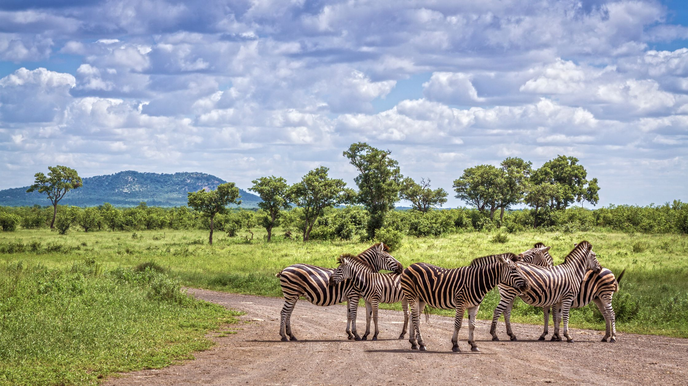
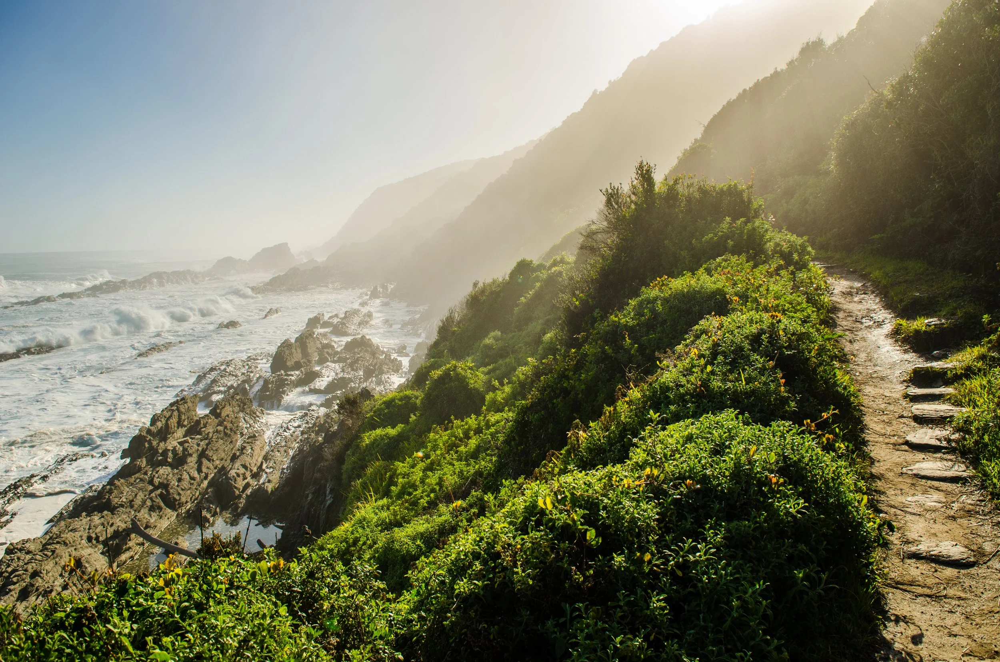
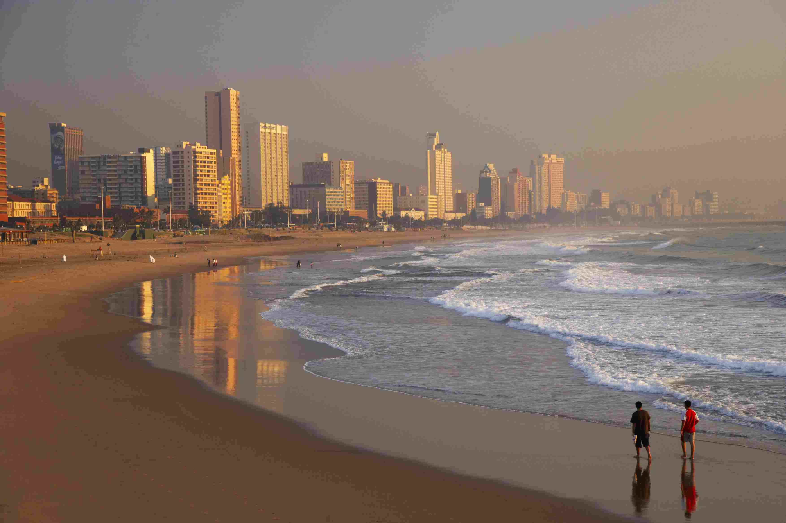
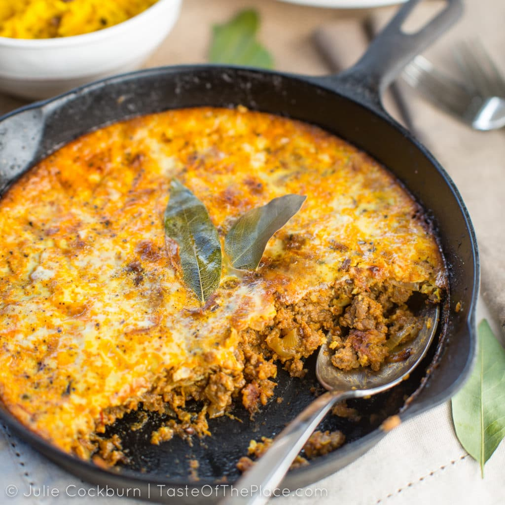
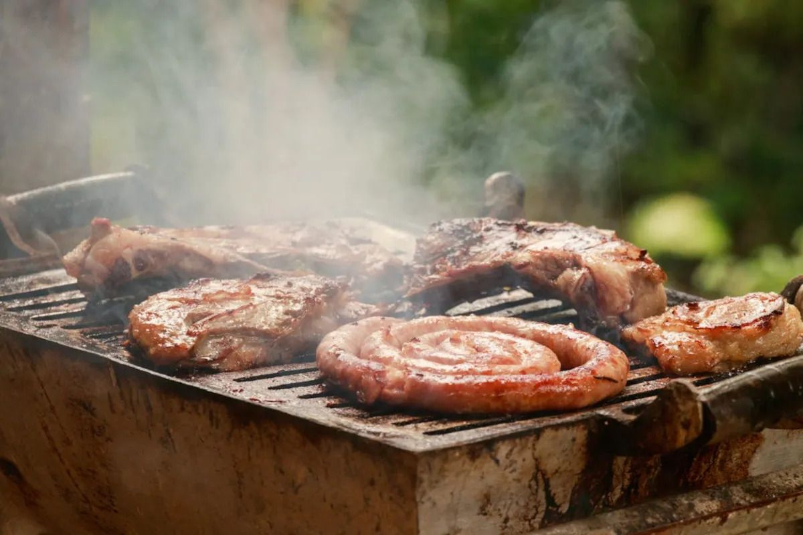

SOUTH AFRICA
About South Africa
South Africa is a fascinating country located at the southern tip of Africa known for its diversity. Tourists can experience modern cities, traditional villages, beaches, mountains, and wildlife.
Top Destinations
1. Cape Town

Famous for Table Mountain and beautiful beaches. It combines nature, history, and modern life in a unique way.
2. Kruger National Park
One of the most famous wildlife parks in Africa, perfect for seeing the “Big Five” animals on safari.
3. Johannesburg

The economic heart of the country with a deep history. Visitors can explore the Apartheid Museum and Soweto.
4. The Garden Route
A famous scenic route along the southern coast known for forests, mountains, lakes, and beaches.
5. Durban
A coastal city with a warm climate and strong Indian influence, perfect for surfing and trying traditional curry.
South African Cuisine
Bobotie
Minced meat baked with an egg-based topping, featuring sweet and savory flavors.
Biltong
.webp)
A popular snack made from dried and cured meat, seasoned with spices.
Braai
A social tradition of cooking meat over an open fire, bringing friends and family together.